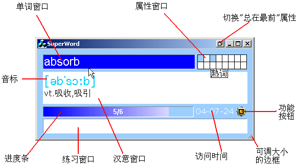
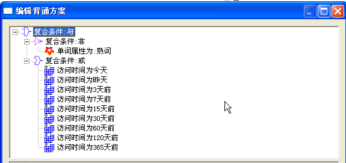
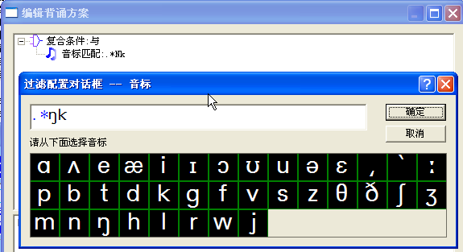
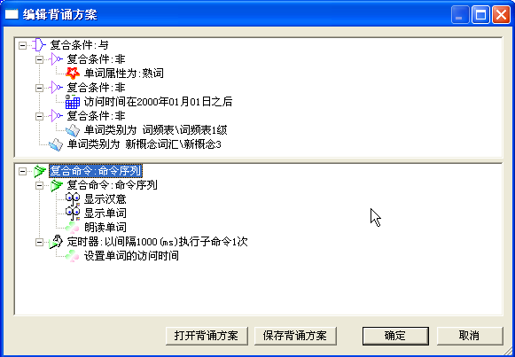
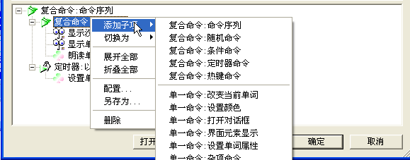

性质：免费软件
软件思想：
引入＂过滤规则＂的概念，过滤规则是指单词的６个基本元素满足的特定条件的各种逻辑组合．
用户在背单词之前自己制定一个过滤规则．用户背诵的单词范围就是所有满足这个过滤规则的单词的总和．
用户可以在背诵的过程中，改变单词的属性和访问时间，而这些又可作为用户将来过滤单词的依据．
有了过滤规则，用户就可以灵活地筛选出自己真正想要背的单词．从而高效地记忆单词．与其它同类软件相比，SuperWord更强调用户积极参与的，以用户为主宰的背诵模式．
下载：请发邮件到 timepp@126.com
SuperWord的主界面秉承了其一惯的简约风格。
|
 |
单词窗口 : 显示用户当前背诵的单词
汉意窗口 : 显示当前背诵单词的音标和汉语意思
进度条 : 显示用户的背诵进度。在进度条的左侧单击左键，回到前一单词；在进度条的右侧单击左键，到后一单词。
属性窗口 : 显示当前单词具有的属性组合
"总在最前属性"切换按钮 : 切换主界面的＂总在最前＂属性，按下去时为＂最在最前＂，弹起时为正常状态
功能按钮 : 弹出用户可以使用的所有功能的菜单
可调大小的边框 : 可以拖动右下角以缩放主界面到适当的大小
访问时间 : 显示当前单词上一次被用户访问的时间。双击访问时间窗口，可以设置单词的访问时间。
练习窗口 : 一个可以显示用户的拼写是否正确的编辑框，当用户在此输入字符时，单词窗口里的单词会自动隐藏
每个单词包含六个不同的子元素:
单词的属性是单词基本属性的组合.单词基本属性反映了单词在某一方面的性质, 每个基本属性可以由用户赋予一个名字. 比如用户可以定义一个基本属性,名字为"生词", 表示一种 "还没有被完全掌握" 的单词性质;单词的属性是基本属性的任意组合, 例如单词"word"的属性可以同时是"生词"和"难记单词". 基本属性可以多达16种, 单词可以同时具有它的16种基本属性.
类别通过一个类别文件进行定义.每个类别文件的文件名指定了一个单词类别, 文件中包含了属于这个类别的所有单词. 每个单词可以在其下一行或上一行附带一个汉意,也可以不带.类别文件都存放在WordClass目录中, 必须以.txt为扩展名. 要注意WordClass\分类词汇\世界民族.txt, 表示的类别实际上是"分类词汇\世界民族", 即带着以WordClass路径为根目录的路径名.单词的类别主要用于单词过滤, 如果想背诵"植物"类的单词, 就可以配一个单词类别过滤规则,指明类别为"植物".
通常情况下,单词的类别是相对固定的, 这一点和单词的属性很不一样. 比如"tree"的属性在今天是"生词", 而明天背熟了, 用户就可以把属性改为"熟词". 但tree在任何情况下都属于"植物"这一单词类别(当然如果用户非要修改的话, 也可以到"植物.txt"中把包含"tree"的一行删除).
单词的六个子元素除英文单词和汉语意思之外, 都是可以为空的.
"英文单词"和"汉语意思"两个元素称为单词的可背诵元素, 在每个单词的六个子元素中,可背诵元素永远非空,而其它元素则可以为空.
可以通过单词的任何一种子元素来过滤单词.
SuperWord在运行过程中保存了一个过滤规则，该规则决定了一个单词该不该被添加到用户的当前背诵列表中。如果一个单词与当前使用的过滤规则匹配，那么这个单词将被加入用户的当前背诵列表，否则不会。过滤规则可以在运行时通过过滤规则对话框改变。
过滤规则分为两大类：单一过滤规则和复合过滤规则。
单一过滤规则共有六种，分别针对单词的六个子元素。它们分别是：
复合过滤规则用于把单一过滤规则按一定的层次顺序组合起来，形成任意复杂的逻辑表达式。复合过滤规则共有三种，它们分别是与过滤规则，或过滤规则，非过滤规则。复合过滤规则内部包含一个过滤规则的列表，(非过滤规则只允许列表中有一个元素), 列表中的过滤规则可以是单一过滤规则，也可以是复合过滤规则。复合过滤规则的成立原则如下：
最终，用户用于过滤单词的规则可能是一个单一过滤规则，也可能是一个复合过滤规则，还可以是空的，这种情况下所有的单词都被选入用户的背诵范围。
同过滤规则一样，命令也展现成树型结构。用户通过命令来告诉Superword在特定的情况下应该怎么响应。比如用户可以在单词满足一定条件时把单词颜色设成红的（使用条件命令+元素设置命令作为子命令），或者开始背诵一定时间后跳到下一单词（使用定时器命令+单词跳转命令作为子命令）。
命令分为单一命令和复合命令。
单一命令有以下几种：
复合命令有以下几种：
命令用可视化的方式在一定程序上模拟了脚本功能。使得用户可以非常灵活地进行配置。

这个过滤规则展示了一种复习单词的方法：科学背词法，它按记忆的规律，只复习当前，一天前，三天前。。。背诵的单词，这是一种非常有成效的复习方法。

用户想把所有尾音是的单词挑出来集中记忆。

背诵概念单词，带朗读。

配置细节